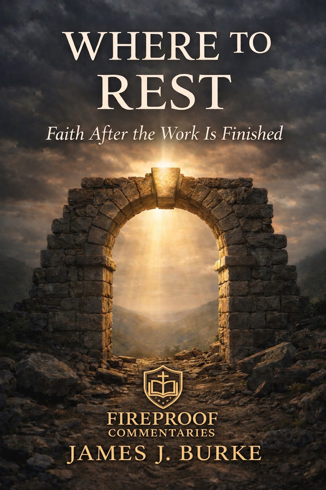

Rest and Completion
Biblical rest is rooted in completion. The soul rests not because everything has become easy, but because Christ has finished the work that truly matters.
Fireproof Commentaries
Christ-centered biblical teaching for readers, teachers, and churches.

Finding Soul-Deep Peace in a World That Won’t Stop
Rest is not the absence of labor. It is the settled confidence of a soul no longer trying to secure what Christ has already finished.
Available through Amazon in Kindle and paperback formats.
Many people are not simply tired because they have worked too hard. They are weary because they are carrying weight they were never meant to bear. They are trying to secure identity, peace, worth, safety, and meaning through effort, control, performance, and self-preservation.
Where to Rest is a Christ-centered exploration of biblical rest. It traces the difference between outward relief and soul-deep rest, between temporary quiet and settled peace, between stopping activity and entering what Christ has completed.
This book does not call the weary to try harder at resting. It calls them to look to Christ, whose finished work is the only place the soul can finally cease striving.
Where to Rest brings the Where To trilogy to completion by showing that the Christian life does not end in perpetual striving, but in settled rest in Christ.
Biblical rest is rooted in completion. The soul rests not because everything has become easy, but because Christ has finished the work that truly matters.
Peace may be experienced in the heart, but rest is grounded outside the heart in what Christ has accomplished.
Christ does not call His people into weightless existence, but into labor under His yoke, where He bears the true weight.
Rest is not achieved by effort. It is entered by faith when the soul ceases trying to secure what has already been given in Christ.
“Rest is not something to be achieved. It is something to be entered.”
The restless soul assumes that peace will come when life finally becomes manageable. Scripture gives a better answer. Rest is not found when the world stops moving, but when the soul is brought to the One who has already finished the work.
Where to Rest is the final volume in the Where To trilogy.
Where to Stand addresses truth and foundation. Where to Walk addresses direction and motion. Where to Rest addresses completion, peace, and the soul’s settled confidence in Christ.
The books may be read individually, but together they form a pathway: a life grounded in truth, directed by light, and brought to rest in the finished work of Christ.
Truth that stands. Faith that walks. Souls that rest.